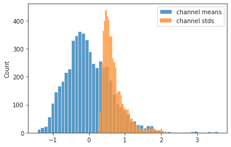
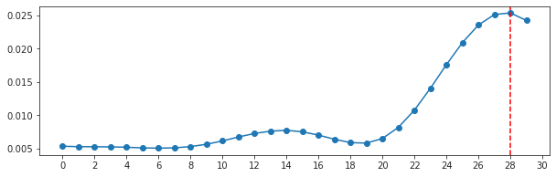
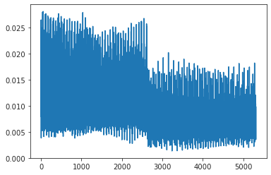
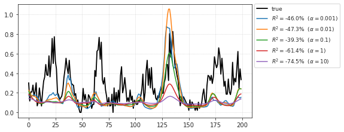
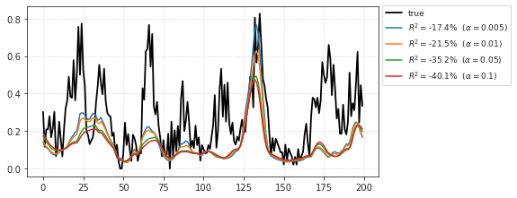
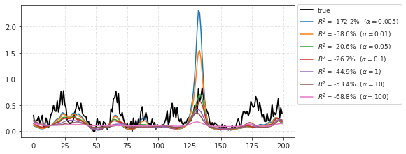

(08) Reservoir + GLM¶
Motivation: Very competetive models with Resrvoir + GLM. This notebook: expt=clu096.
Approach:¶
STA
find best_lag
at best_lag, find best \((i, j)\)
Additionally, you can find best filters as well.
Finally, fit a GLM at best-lag and best \((i, j)\) using all or a subset of filters.
# HIDE CODE
import os, sys
from IPython.display import display
# tmp & extras dir
git_dir = os.path.join(os.environ['HOME'], 'Dropbox/git')
extras_dir = os.path.join(git_dir, 'jb-MTMST/_extras')
fig_base_dir = os.path.join(git_dir, 'jb-MTMST/figs')
tmp_dir = os.path.join(git_dir, 'jb-MTMST/tmp')
# GitHub
sys.path.insert(0, os.path.join(git_dir, '_MTMST'))
from vae.train_vae import TrainerVAE, ConfigTrainVAE
from vae.vae2d import VAE, ConfigVAE
from analysis.opticflow import *
from figures.fighelper import *
# warnings, tqdm, & style
warnings.filterwarnings('ignore', category=DeprecationWarning)
from rich.jupyter import print
%matplotlib inline
set_style()
from torch.nn import functional as F
from sklearn.decomposition import PCA
from analysis.linear import LinearModel, flatten_stim
from base.dataset import setup_supervised_data, setup_repeat_data, time_embed
Load neuron¶
cfg = ConfigVAE(save=False)
file = h5py.File(cfg.h_file, 'r')
expt = 'clu096'
grp = file[expt]
scale = 2.25
hf_kws = {
'size': 19,
'sres': 1,
'radius': 6,
}
hf = HyperFlow(
params=np.array(grp['hyperflow'])[:, 2:],
center=np.array(grp['hyperflow'])[:, :2],
**hf_kws,
)
stim = hf.compute_hyperflow()
spks = np.array(grp['spks'], dtype=float)
good = ~np.array(grp['badspks'])
good = np.where(good)[0]
# src, tgt = setup_supervised_data(lags, good, stim, spks)
stim_r, spks_r, intvl = setup_repeat_data(grp, lags=None, hf_kws=hf_kws)
stim_scale = np.max(np.abs(stim))
stim *= scale / stim_scale
if stim_r is not None:
stim_r *= scale / stim_scale
stim.shape, stim_r.shape
((28800, 2, 19, 19), (12000, 2, 19, 19))
Reservoir¶
vae = VAE(ConfigVAE(
n_kers=4,
n_latent_scales=2, n_groups_per_scale=20, n_latent_per_group=7,
scale_init=False, residual_kl=True, ada_groups=True,
))
tr = TrainerVAE(model=vae, cfg=ConfigTrainVAE(batch_size=300), device='cuda:1')
vae.cfg.total_latents()
210
vae.print()
vae.scales
+--------------+------------+ | Module Name | Num Params | +--------------+------------+ | VAE | 17.0 Mil | | --- | --- | | stem | 1.1 K | | pre_process | 96.0 K | | enc_tower | 9.4 Mil | | enc0 | 16.6 K | | enc_sampler | 1.4 Mil | | dec_sampler | 1.4 Mil | | expand | 71.0 K | | dec_tower | 4.5 Mil | | post_process | 40.0 K | | out | 578 | +--------------+------------+
[8, 4]
Extract features¶
from readout.readout import process_ftrs
kws_process = dict(
scale=4,
pool='max',
act_fn='swish',
)
# Stim
enc = []
for i in tqdm(range(int(np.ceil(len(stim) / tr.cfg.batch_size)))):
a = i * tr.cfg.batch_size
b = min(a + tr.cfg.batch_size, len(stim))
*_, ftr = tr.model_ema.xtract_ftr(
x=tr.to(stim[a:b]), full=True)
ftr = process_ftrs(ftr['enc'], **kws_process)
ftr = torch.cat(list(ftr.values()), dim=1)
enc.append(to_np(ftr))
enc = np.concatenate(enc)
enc_r = []
for i in range(int(np.ceil(1000 / tr.cfg.batch_size))):
a = i * tr.cfg.batch_size
b = min(a + tr.cfg.batch_size, len(stim_r))
*_, ftr = tr.model_ema.xtract_ftr(
x=tr.to(stim_r[a:b]), full=True)
ftr = process_ftrs(ftr['enc'], **kws_process)
ftr = torch.cat(list(ftr.values()), dim=1)
enc_r.append(to_np(ftr))
enc_r = np.concatenate(enc_r)
enc.shape, enc_r.shape
100%|██████████| 96/96 [00:21<00:00, 4.53it/s]
((28800, 5312, 4, 4), (1200, 5312, 4, 4))
mu, sd = enc.mean(), enc.std()
mu, sd
(0.026566723, 0.12153089)
enc = (enc - mu) / sd
enc_r = (enc_r - mu) / sd
mu_ch = np.mean(enc, axis=(0, 2, 3))
sd_ch = np.std(enc, axis=(0, 2, 3))
sns.histplot(mu_ch, label='channel means')
sns.histplot(sd_ch, color='C1', label='channel stds')
plt.legend();

Select best pix/lag using STA¶
from analysis.linear import compute_sta
lags = 29
sta = compute_sta(
lags=lags,
good=good,
stim=enc,
spks=spks,
zscore=True,
verbose=True,
)
sta.shape
100%|██████████| 24270/24270 [06:54<00:00, 58.49it/s]
(1, 30, 5312, 4, 4)
enc.shape, spks.shape, len(good)
((28800, 5312, 4, 4), (28800, 1), 24280)
sta.mean(), sta.std()
(0.008055165333618683, 0.09905146851923409)
dims = (2, 3, 4)
norm = np.mean(sta ** 2, axis=dims)
best_lag = np.argmax(norm[:, -5:][:, ::-1], axis=1)
norm.shape
(1, 30)
fig, ax = create_figure(1, 1, (10, 3))
ax.plot(norm[0], marker='o')
plt.axvline(lags - best_lag[0], color='r', ls='--')
ax.locator_params(axis='x', nbins=25)

sta.shape
(1, 30, 5312, 4, 4)
dims = (1, 3, 4)
norm = np.mean(sta ** 2, axis=dims)
plt.plot(norm[0]);

best_filts = np.argsort(norm[0])[::-1]
best_filts[0]
52
dims = (1, 2)
norm = np.mean(sta ** 2, axis=dims)
best_i, best_j = np.unravel_index(np.argmax(norm[0]), (4, 4))
best_i, best_j
(0, 3)
plt.imshow(norm[0])
<matplotlib.image.AxesImage at 0x7f8ffee862b0>
Top 300 filters + 12 lags¶
src = time_embed(enc[:, best_filts[:300], best_i, best_j], lags=12, idxs=good)
src_r = time_embed(enc_r[:, best_filts[:300], best_i, best_j], lags=12, idxs=intvl)
src.shape, src_r.shape
((24280, 12, 300), (200, 12, 300))
%%time
neuron_i = 0
idxs = good.copy()
idxs = idxs[idxs > best_lag[neuron_i]]
glm_kws = dict(
category='PoissonRegressor',
x=src,
y=spks[idxs, neuron_i],
x_tst=src_r,
y_tst=np.nanmean(spks_r[neuron_i], 0),
alphas=[1e-3, 1e-2, 1e-1, 1, 10],
)
glm = LinearModel(**glm_kws).fit(fit_df=False, max_iter=1000)
CPU times: user 1h 18min 27s, sys: 12min 10s, total: 1h 30min 38s
Wall time: 19min 26s
glm.show_pred();

glm.r_tst
{0.001: 0.4051818504804795,
0.01: 0.43707450694587946,
0.1: 0.4594394683711419,
1: 0.4504742723635018,
10: 0.4382929960451283}
Now all filters, but at max lag¶
sta.shape
(1, 30, 5312, 4, 4)
dims = (0,)
norm = sta[0, best_lag[0]]
norm = np.mean(norm ** 2, axis=dims)
best_i, best_j = np.unravel_index(np.argmax(norm), norm.shape)
best_i, best_j
(0, 3)
plt.imshow(norm)
<matplotlib.image.AxesImage at 0x7f8fd4308640>
x = enc[idxs - best_lag[0], :, best_i, best_j]
x_tst = enc_r[intvl - best_lag[0], :, best_i, best_j]
x.shape, x_tst.shape
((24280, 5312), (200, 5312))
neuron_i = 0
idxs = good.copy()
idxs = idxs[idxs > best_lag[neuron_i]]
glm_kws = dict(
category='PoissonRegressor',
x=x,
y=spks[idxs, neuron_i],
x_tst=x_tst,
y_tst=np.nanmean(spks_r[neuron_i], 0),
alphas=[5e-3, 1e-2, 5e-2, 1e-1],
)
glm = LinearModel(**glm_kws).fit(fit_df=False, max_iter=1000)
glm.show_pred();

glm.r_tst
{0.005: 0.5812316118628275,
0.01: 0.5829543712002115,
0.05: 0.55011559255433,
0.1: 0.5314278087525216}
Zscored features?¶
mu = x.mean(0, keepdims=True)
sd = x.std(0, keepdims=True)
neuron_i = 0
idxs = good.copy()
idxs = idxs[idxs > best_lag[neuron_i]]
glm_kws = dict(
category='PoissonRegressor',
x=(x - mu) / sd,
y=spks[idxs, neuron_i],
x_tst=(x_tst - mu) / sd,
y_tst=np.nanmean(spks_r[neuron_i], 0),
alphas=[5e-3, 1e-2, 5e-2, 1e-1, 1, 10, 100],
)
glm = LinearModel(**glm_kws).fit(fit_df=False, max_iter=1000)
glm.show_pred();

glm.r_tst
{0.005: 0.495152367570329,
0.01: 0.5326852701669722,
0.05: 0.5867188772056051,
0.1: 0.5842036467783142,
1: 0.5303149101141236,
10: 0.4781822852733906,
100: 0.4517347920040796}